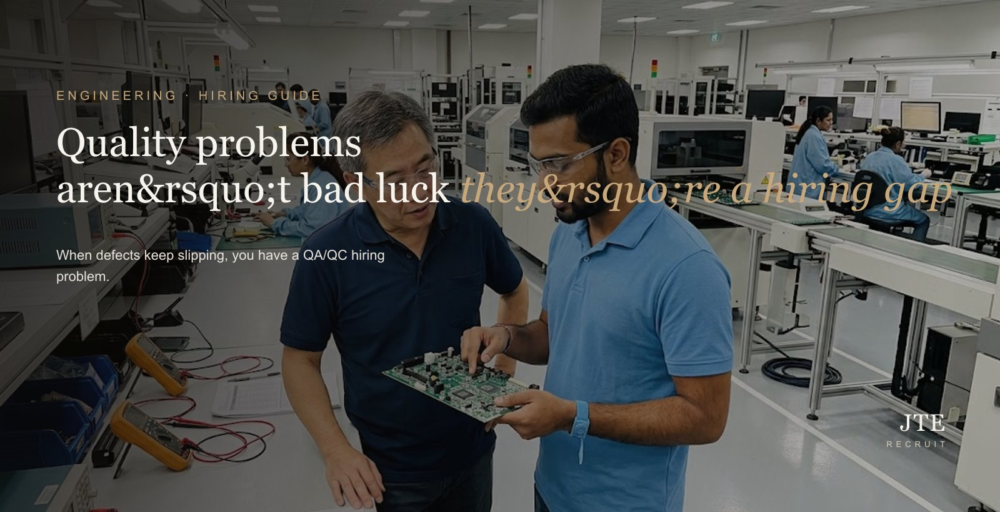
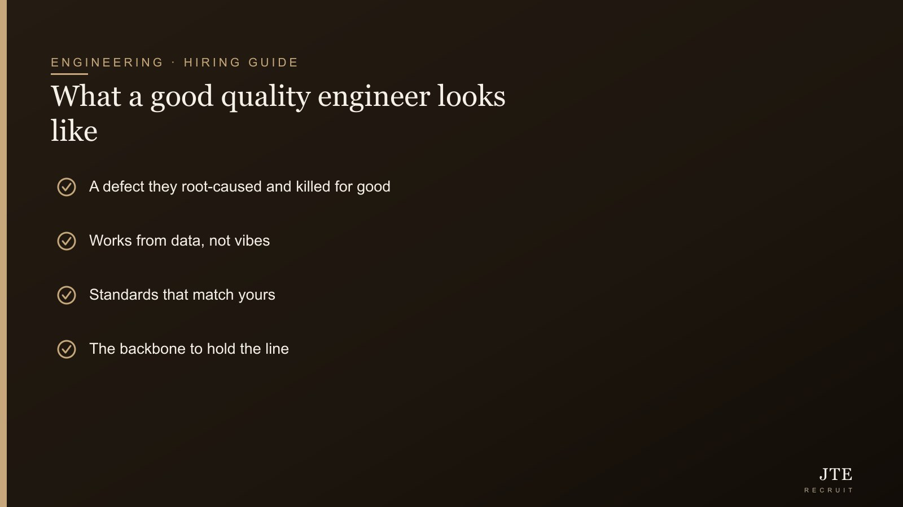
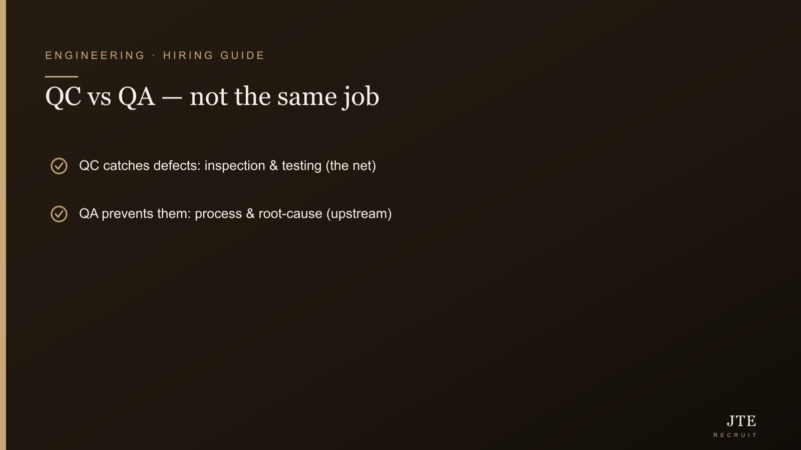

Here’s a pattern I see in manufacturing SMEs: defects keep slipping through, customers keep complaining, rework keeps eating margin — and everyone treats it as bad luck or “the workers being careless.” Usually it’s neither. It’s a QA/QC hiring gap: either there’s no real quality engineer, or the wrong flavour was hired, or the role was treated as a box-ticking inspector rather than someone who actually drives quality. Get this hire right and the quality problems that felt permanent start to disappear. Let me explain what good looks like.
Quality is one of those functions that’s invisible when it’s working and screaming when it isn’t — so it’s worth understanding what you’re actually hiring for.

QC vs QA: they’re not the same job
The two get lumped together, but they point different ways. Quality Control (QC) is about catching defects — inspection, testing, checking that what’s made meets spec. Quality Assurance (QA) goes upstream — building the processes and systems so defects don’t happen in the first place. QC is the net; QA stops things falling. If your problem is that bad product reaches customers, you may need better QC; if the same defects keep recurring, you need QA thinking. Many roles need both, but be clear which problem is biting.
The box-tick trap
The most common mistake isn’t hiring the wrong person — it’s hiring a good person into a box-ticking role. If your “quality engineer” just fills in inspection sheets and rubber-stamps, you’re getting a fraction of the value. A genuinely good quality engineer investigates why defects happen, drives root-cause fixes, and improves the process so the problem doesn’t come back. Hire for that, and give them the authority to actually change things — otherwise you’ve bought a clipboard, not a solution.
“If your quality engineer just fills in inspection sheets, you’ve bought a clipboard, not a solution.”
What good actually looks like
- A defect they killed for good — not just caught, but root-caused and designed out. Ask for a real example.
- Data, not vibes — comfort with the numbers (defect rates, trends, SPC) and using them to find problems.
- Standards that match yours — the industry’s quality standards and any certifications your customers demand.
- Backbone — a quality engineer sometimes has to say “we can’t ship this,” which means someone willing to hold the line under production pressure.

The backbone part matters more than people think
Quality is where commercial pressure and doing-it-right collide — the order’s due, the customer’s waiting, and the quality engineer is the one saying “not yet.” A meek quality hire who caves every time isn’t protecting you. You want someone with the judgment to know which battles matter and the spine to hold them — and you have to back them, or the role is theatre.
Where it’s scarce
Experienced quality engineers who can genuinely do the QA (process, root-cause, improvement) side — not just inspect — are in real demand, and the good ones don’t sit on the market. If your quality role’s been open or you keep hiring inspectors when you need a problem-solver, that’s worth a conversation.
Frequently asked questions
What’s the difference between QA and QC?
Quality Control (QC) catches defects — inspection and testing to check output meets spec. Quality Assurance (QA) goes upstream, building processes so defects don’t happen in the first place. QC is the safety net; QA stops things falling. If bad product reaches customers you may need better QC; if the same defects recur, you need QA thinking.
Why do defects keep slipping through despite having a quality person?
Often because the role was set up as box-ticking inspection rather than genuine quality engineering. A clipboard that rubber-stamps won’t fix recurring defects — you need someone who root-causes problems, drives process fixes, and has the authority to change things.
What should I look for in a QA/QC engineer?
A defect they root-caused and designed out (not just caught), comfort with data and quality metrics, experience with the standards and certifications your customers require, and the backbone to hold the line on quality under production pressure. Ask for concrete examples, not job descriptions.
Do I need a QA or a QC engineer?
It depends on the problem. If bad product is reaching customers, better QC (inspection and testing) helps immediately. If the same defects keep recurring, you need QA (process and root-cause). Many roles need both — be clear which problem is hurting most so you hire the right emphasis.
Why is it hard to hire good quality engineers?
Experienced people who can genuinely do the QA side — process improvement and root-cause, not just inspection — are in real demand and rarely idle. Many employers also keep hiring inspectors when they actually need a problem-solver, which leaves the real gap unfilled.
If quality problems keep coming back, the fix is usually the right hire with the right remit — and the good ones need reaching, not advertising. Tell us what’s slipping and we’ll help you find a real quality engineer. More on engineering recruitment.